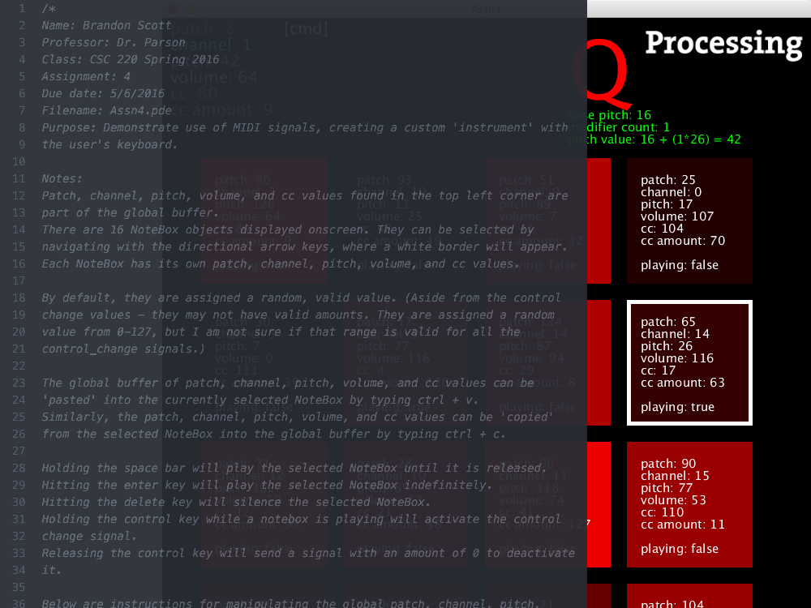

This project was the final assignment for CSC 220: Multimedia Programming.
The objective was to create a custom instrument for a user to play with the keyboard,
using different alphabetic keys to map to pitch frequencies that are sent in MIDI messages.
The requirements were to map the alphabetical keys, lower and uppercase, to pitch ranges,
and to give the user some way of changing the patch (instrument value), channel (track), and volume
level of the MIDI message.
Aside from that, we were given a huge amount of freedom to design the program how we wanted,
both visually and functionally. I decided to provide an interface of "NoteBox" objects that each
had their own patch, pitch, channel, and volume values. These NoteBoxes could be activated temporarily
by holding the space bar, or played indefinitely (if the instrument supports so) with the enter key.
The variables could be entered into a global buffer in the top left corner of the screen by holding
modifier keys (tab, shift, option, command) and either alphabetic keys (for pitch) or numeric keys
(for all other values). These global values could be copied from or pasted into a NoteBox with control-c
or control-v respectively.
I had a lot of fun working with this project because I had a clear plan for what I wanted to do with it
as soon as it was handed out - and I got to play with audio processing for the first time, which was
a great experience.